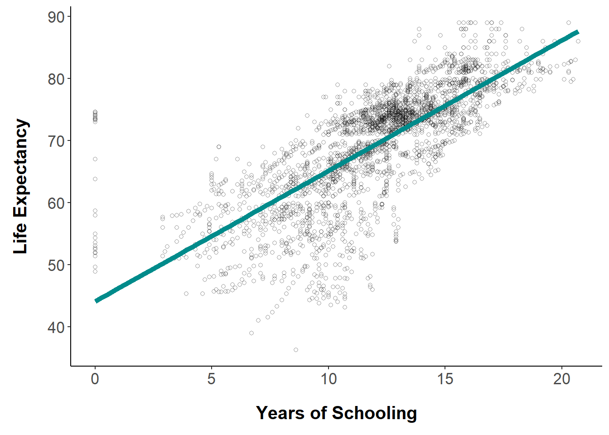

Increased education leads to longer life expectancy.
Contributing Factors to Life Expectancy
Anna Wallace 1
aw1514a@american.edu
1 School of International Service, American University
Introduction
While mortality rates have vastly decreased over the last century, life expectancy can still vary greatly by country. This study will determine the contributing factors that affect life expectancy, whether that be social, economic, or mortality factors. In particular, it will focus on what effect schooling and a country’s development status have on average life expectancy. The main hypothesis is that increased schooling and a developed country status will positively affect life expectancy. This study is extremely important as it can help governments identify the level of education their country has and work to improve it if necessary in order to improve life expectancy.
Data
This data was obtained on Kaggle and it was collected from the Global Health Observatory data repository that is housed under the World Health Organization. All economic data was collected from the United Nations website. It focuses on data from 193 countries during the time period 2000 - 2015. The dataset contains 2,938 observations of 22 different variables, including a country’s development status, life expectancy in age, expenditure on health as a percentage of GDP per capita, and the average amount of schooling received.
Analysis
Below is a table of summary statistics that groups average life expectancy by a country’s development status.
Looking at a country’s life expectancy by development status, it is clear the citizens of developed countries live about 12 years longer on average.
Table 1. Life Expectancy by Development Status| Status | n | Avg | StdDev | 0 | 50 | 100 |
|---|---|---|---|---|---|---|
| Developed | 512 | 79.2 | 3.9 | 69.9 | 79.2 | 89 |
| Developing | 2416 | 67.1 | 9.0 | 36.3 | 69.0 | 89 |
But does the average amount of time spent in school affect a country’s life expectancy? When education levels were plotted against life expectancy, it shows a clear positive correlation. That is, Graph 1 shows that as the amount of time spent in school increases, so does average life expectancy.
Graph 1. Life Expectancy per Years Spent in School 
Combining education levels and development status, Graph 2 shows that developed countries have, on average, about 4 more years of schooling than developing countries.
Graph 2. Years Spent in School per Development Status

Finally, in order to test the hypothesis that education as well as development status positively impacts life expectancy, the below multiple regression gave the following analysis:
Table 2. Multiple Regression Analysis
| Dependent variable: | ||
| life_ex | ||
| (1) | (2) | |
| Schooling | 2.103*** | 1.931*** |
| (0.035) | (0.040) | |
| StatusDeveloping | -2.990*** | |
| (0.362) | ||
| Constant | 44.109*** | 48.664*** |
| (0.437) | (0.700) | |
| Observations | 2,768 | 2,768 |
| Note: | p<0.1; p<0.05; p<0.01 | |
This table shows that there is a statistically significant relationship to the 0.01 level between the number of years spent in school and life expectancy; increased education causes increased life expectancy. There is also a statistically significant relationship to the 0.01 level between a country’s development status and life expectancy; that is, a country with a developing status has a lower life expectancy.
Findings
This study aimed to find a positive causal relationship between education and life expectancy. After analyzing the data, it is clear that there is a significant and causal relationship between the number of years spent in school and a country’s average life expectancy. The more years that citizens of a country spend in school, the longer they will live. In addition, the study also proved that development status does have a significant and causal relationship with life expectancy. Countries with a developing status have a lower life expectancy than those with a developed status.
While there were some limitations to this study such as incomplete data, these results do show that education can have a lasting impact on average life span.